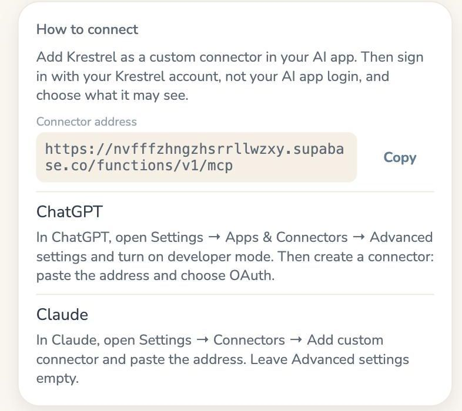
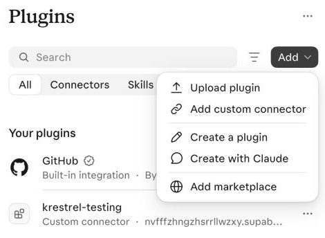
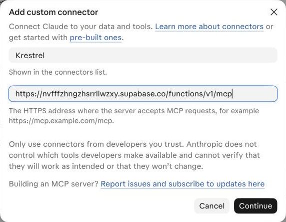
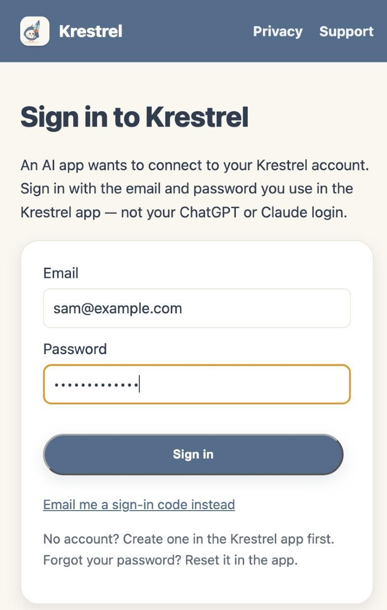
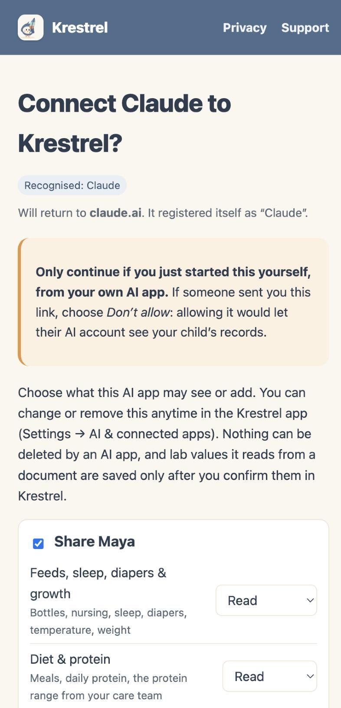
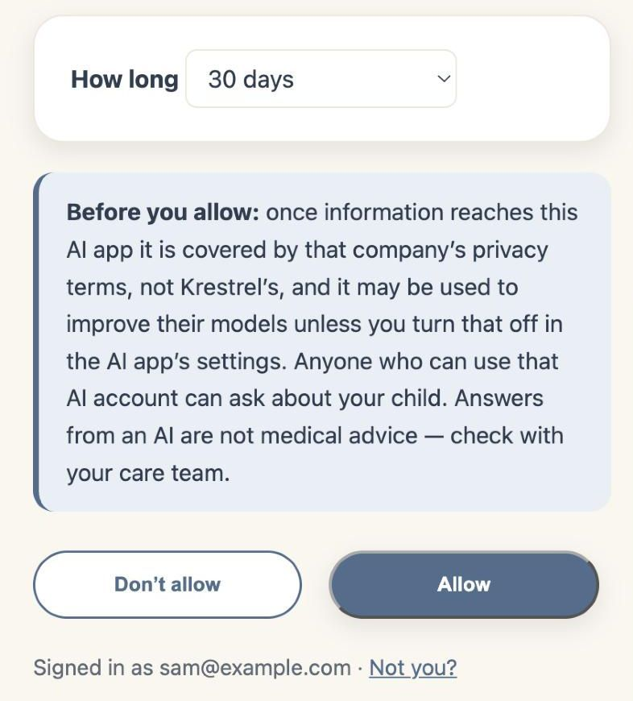
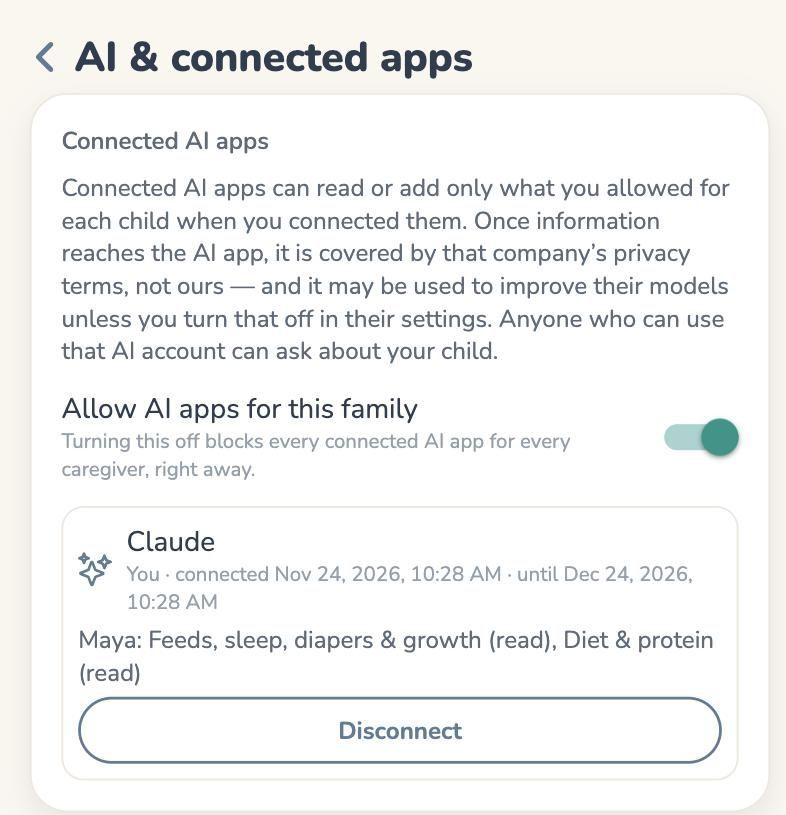
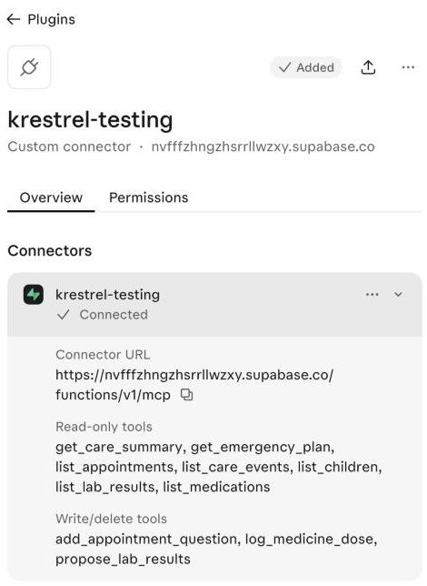
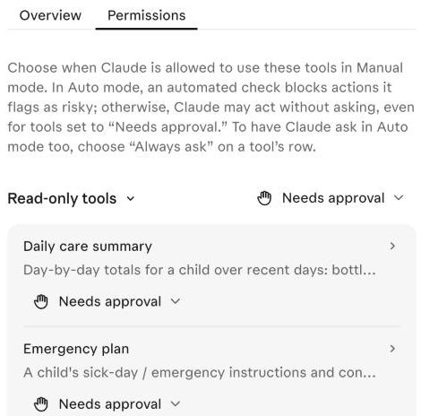

Connect Claude to Krestrel
Step by step, with screenshots. It takes about three minutes. The screenshots show a demo family.
Before you start 1. Copy the address 2. Add it in Claude 3. Sign in 4. Choose access 5. Allow 6. Check the app Using it in Claude Example: labs from a PDF If something goes wrong
Before you start
- You need a Krestrel account and the Krestrel app on your phone.
- AI apps must be turned on for your family. If you're not the primary caregiver, a primary caregiver has to allow you first. In the Krestrel app, they open Settings, tap your name under Circle, and turn on Connect AI apps.
- You need a Claude account whose plan lets you add custom connectors. On a Team or Enterprise plan, an owner may need to add the connector for your organisation first.
1. Copy the connector address in Krestrel
In the Krestrel app, open Settings → AI & connected apps. Under How to connect, tap Copy next to the connector address.

2. Add Krestrel as a connector in Claude
Do this in Claude on the web (claude.ai) or in the Claude desktop app. Connectors now live under Plugins. They used to be in Settings → Connectors.
Open Plugins in the sidebar. Choose Add, then Add custom connector.

Type Krestrel as the name, paste the address you copied, and choose Continue. There's nothing else to fill in: Claude registers itself with Krestrel.

A Krestrel sign-in page opens. If it doesn't, open Krestrel in your plugins list and choose Connect. After you add Krestrel once, you can also use it in the Claude phone apps.
3. Sign in with your Krestrel account
Enter the email and password you use in the Krestrel app, not your Claude login. You can also ask for a sign-in code by email.

4. Check it's Claude, then choose what it may see
First, check the top of the page. It should say Connect Claude to Krestrel? with Recognised: Claude, and it should say it will return to claude.ai. If it names anything else, or you didn't just start this yourself, choose Don't allow.
Then, for each child, choose what Claude may do in each area: No access, Read, or Read & add. Untick a child to keep that child out completely. Give only what you need. You can change it later.

5. Choose how long, then Allow
Pick how long the connection lasts. It's 30 days unless you change it. Read the note under Before you allow, then choose Allow. You'll go back to Claude, and Krestrel will show as connected.

6. Check the connection in Krestrel
Back in Settings → AI & connected apps, Claude now appears with what it may see and when access ends. If it isn't there yet, pull down to refresh. Primary caregivers also see the AI apps that other caregivers have connected.

In Claude, open Krestrel from Plugins. It should say Connected and list the Krestrel tools Claude may use. The list depends on what you allowed in step 4.

Using Krestrel in Claude
You don't need special commands. Ask in plain words, and Claude uses Krestrel when the question is about your child's care. Naming Krestrel helps if Claude doesn't pick it up:
- "Using Krestrel, how was Maya's protein this week?"
- "How did Maya sleep over the last three nights?"
- "When is Maya's next appointment? Add a question for it: should we change her evening formula?"
- "Log a 120 ml bottle for Maya at 7:30 this morning."
- "Here's a photo of Maya's lab report. Add the results to Krestrel."
- "What does Maya's emergency plan say to do if she's vomiting?"
Example: add lab results from a PDF
Say the clinic emailed Maya's latest amino acid results as a PDF.
- Start a new chat in Claude. Attach the PDF with the + button, or drag it in.
- Type: "Add these lab results to Maya's Krestrel record."
- Claude reads the values and asks to use Krestrel's Propose lab results (draft) tool. Allow it.
- Claude says it saved the results as a draft. They aren't in Maya's lab history yet.
- In the Krestrel app, open Settings → AI & connected apps. Tap Lab results for Maya in the To review card at the top. Pull down to refresh if it isn't there yet.
- Check each value against the PDF. Switch off any that look wrong, then tap Save to Labs. Or tap Discard to throw the draft away.
Only the values you save go into Maya's lab history. This step is deliberate: an AI can misread a number or a unit, and lab values matter.
What Claude can and can't do
- Claude asks first, in Manual mode. The hand icon under the message box shows Claude's mode. In Manual, Claude asks for your OK before it uses a Krestrel tool. In Auto, it may go ahead without asking. To be asked every time, open Krestrel in Plugins, go to Permissions, and choose Always ask.
- On or off for each chat. Use the + button under the message box (Add files, connectors, and more) to turn Krestrel on or off in the current chat.
- Only what you allowed. Claude sees only the children and areas you chose in step 4. Adding entries needs Read & add.
- Lab results wait for you. Lab values Claude reads from a document stay a draft until you confirm them in Krestrel. See the example above.
- Nothing gets deleted. An AI app can't delete anything in Krestrel.
- Not medical advice. Check anything important with your care team.

If something goes wrong
The sign-in page says "Krestrel can't connect to this app"
Krestrel only connects to ChatGPT, Claude and AI apps running on your own computer. Go back, and don't sign in from that link again. Start again from step 2 in your own Claude account.
The page says "AI apps are turned off" or "Ask your primary caregiver first"
A primary caregiver needs to turn AI apps on for the family in Settings → AI & connected apps, or allow you under Circle. See Before you start.
Claude says Krestrel needs to reconnect
The connection reached the end of the time you chose. In Claude, open Krestrel in Plugins and choose Connect, then repeat steps 3 to 5.
I can't find "Add custom connector"
Look under Plugins → Add, not Settings. If it isn't there, your Claude plan may not include custom connectors, or your organisation may manage them.
How do I disconnect?
In Krestrel, use Settings → AI & connected apps → Disconnect. That takes effect right away. You can also remove the connector in Claude, under Plugins. Read more in the Privacy Policy.
Still stuck? Email support@krestrel.com.